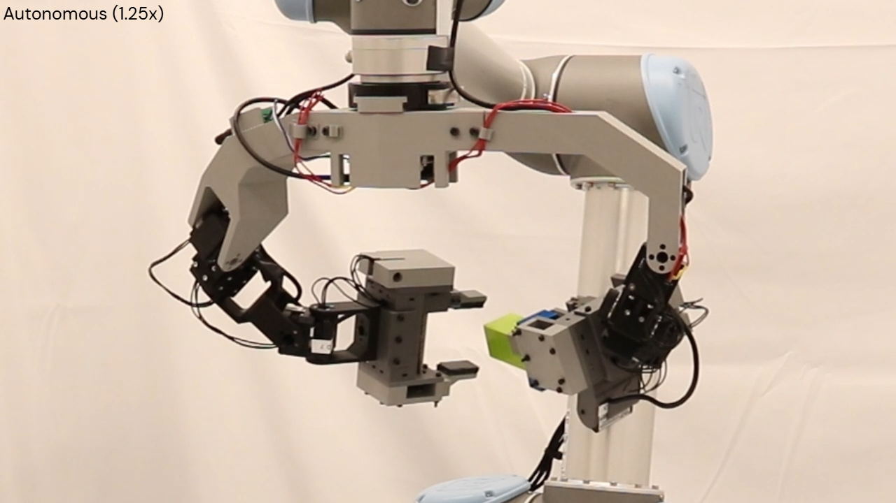
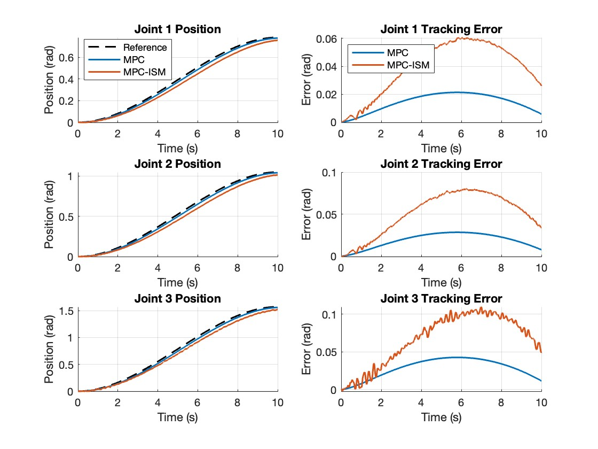
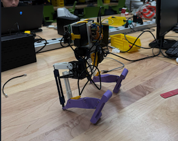
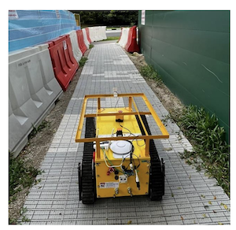
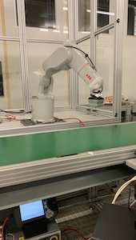
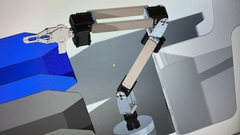
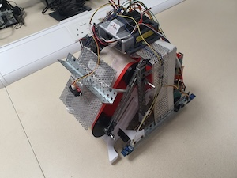
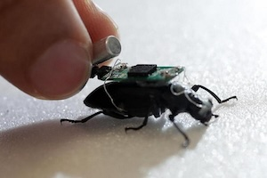

Hi! I am Swapneel, a Graduate Mechanical Engineering student at Columbia University pursuing a specialization in Robotics and Control. I've worked as a robotics engineer for 2 years at Augmentus and have received my Bachelor's in Mechanical Engineering from NTU. I have over 3 years of internship, research and full-time experience in the development and maintenance of robotic software. I am a fast and willing learner, demonstrating expertise in engineering technologies, programming languages, and engineering principles, with a proven ability to create, optimize, and manage software applications for robotic systems.
I'm looking for projects involving intelligent robotic manipulation that allow me to develop my knowledge base further in articulated robot manipulation in dynamic environments—where I can put my prior knowledge to use and also gain valuable experience and new skills in cutting-edge robotics development.
Majoring in Mechanical Engineering with a Concentration in Robotics and Control. Expected graduation December 2025. Relevant coursework includes Applied Robotics: Software and Algorithms, Industrial Automation, Robotics Studio, and more.
Specialized in Robotics and Mechatronics. Studied Robot Kinematics, Machine Vision, Mechatronic System Design, Mechatronics Signals Interfacing, Microprocessor Systems, Introductory Data Science, and core Mechanical Engineering courses such as Heat Transfer, Thermodynamics, Machine Element Design, Computer-Aided Engineering, Theory of Mechanisms, and Fluid Mechanics.

ROAM Lab, Columbia University — Jan 2025 – Present
• Project Website
• Developing a miniature bi-fingered end effector to improve robot dexterity under Prof. Matei Ciocarlie and the ROAM Lab.
• Conducting kinematic analysis and design optimization in ROS2 to maximize workspace utilization and finger performance.
• Utilizing the MiniBEE to train behavioral cloning diffusion policies for dexterous manipulation tasks.

Collaborative Project with Onur Calisir — Columbia University, 2025
• GitHub Repository
• Implemented a hierarchical three-layer controller combining Model Predictive Control (MPC) and Integral Sliding Mode (ISM) to achieve robust tracking on nonlinear robotic manipulators.
• Designed inverse dynamics linearization to decouple nonlinear MIMO systems, followed by ISM uncertainty rejection and MPC for optimal trajectory tracking.
• Simulated multi-rate control with fast ISM (1 ms) and slower MPC (20 ms) sampling for a 3-DOF manipulator under uncertainty injection.
• Observed that while MPC handled nominal tracking efficiently, ISM improved robustness against high-magnitude uncertainty by adapting control inputs dynamically.
• Based on the IEEE/ASME paper “MPC for Robot Manipulators with Integral Sliding Modes Generation” by Incremona et al. (2017).

Robotics Studio Project, Columbia University
- Designed, fabricated, assembled, and programmed a bipedal walking robot from scratch with a teammate.
- Performed kinematic analysis of bipedal gait using CAD keyframing and function smoothing.
- Achieved a final walking speed of 10.4 cm/s.

Developed camera-feed integration for an HMI on a construction-site stair-climbing robot. Performed a literature review of image stitching for 360° views with fisheye cameras and sourced appropriate sensors. Implemented stitching and prepared frames for directional feeds.
Download Project Presentation
Programmed the IRB120 robot for automated plastic waste sorting on a conveyor using a hybrid AI system (Terahertz sensor + computer vision). Supported classification model development and integrated cameras and mechatronic devices in ROS. Built a live RViz digital twin with metrics on plastic types and picking rate.

Engineered a 6-DOF robotic arm and supporting mechatronics to automate dishwashing. Designed trays for dirty/clean utensils and a rinsing/scrubbing station to clean 5+ utensil types. Led controls using ROS, MoveIt!, and Dynamixel Workbench for motion planning and actuation.

Designed and prototyped the winning robot for a course competition. Programmed motion and search strategy to locate tennis balls and return them to a drop-off point; integrated sensors with the VEX microcontroller for boundary, pickup, and drop-off status.

Part-time research with Prof. Hirotaka Sato's team (Apr 2020 – Feb 2021). Designed experiments to evaluate swarm exploration efficiency (sizes 10–100) across algorithms (E. coli-like motion, fixed/variable step length, etc.) using ARGoS 3, and logged performance for comparative analysis.
- Developed C# for a no-code robotics platform, reducing engineering cost for clients by up to 73%.
- Engineered algorithms for robot kinematics and motion planning to execute processes accurately and efficiently.
- Deployed applications for welding, spraying, and sandblasting, reducing programming time by up to 21× and increasing productivity by 10×.
- Practiced TDD and rigorous code reviews to ensure high-quality deployments.
- Experienced with industrial vision systems (Keyence CV-X) and LMI Gocator laser scanners.
Worked on mechatronic system development and robotic arm manipulation:
- Programmed in Python/C++ with ROS to integrate stereo cameras, sensors, and a robotic arm.
- Developed ROS manipulation code for robotic pick-up.
- Used industrial PLCs for sensor integration and related applications.
- Built a navigation package for a disinfectant robot aimed at mitigating COVID-19 spread.
- Collaborated with software leads to refine application requirements and learn ROS architecture.
- Used the ROS Navigation Stack for path planning in mapped environments, enabling ~4× faster disinfection.
Email: swapneel.bhatt@columbia.edu
Phone: +1 646 240 8908